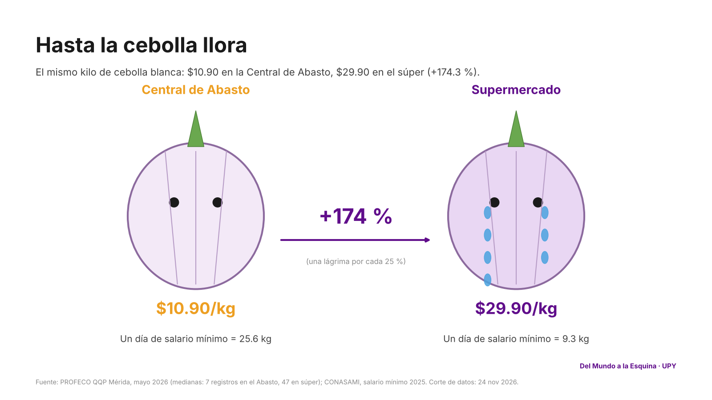
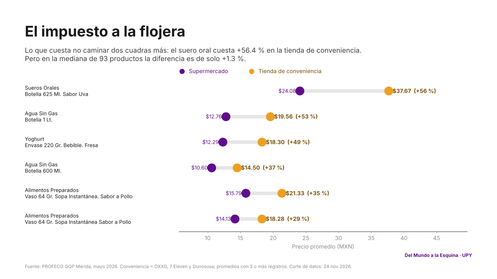
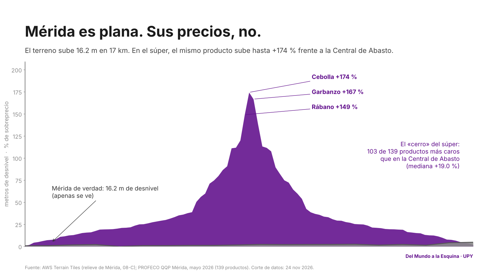

¿Por qué comer cuesta más donde menos se gana?
En Mérida, Yucatán, lo que pagas en la caja depende de dónde compras. Cruzamos fuentes oficiales (PROFECO, INEGI DENUE, Censos Económicos, Censo 2020, ENOE, CONEVAL), nuestra bitácora de 5 tienditas y relieve real del terreno, y lo traducimos a algo concreto: ¿cuántos kilos de tortilla ($29.50/kg en tortillería, PROFECO) te cuesta la diferencia?
[LA HISTORIA EN 10 SEGUNDOS]
En mayo de 2026 PROFECO registró el mismo producto en la Central de Abasto y en supermercados de Mérida. De 139 productos comparables, en 103 (74.1%) el súper cobró más (mediana de la diferencia: +19.0%). La cebolla blanca cuesta $10.90 en Abasto y $29.90 en el súper (+174%). Pero no siempre: la tortilla de maíz es 54% más barata en el súper.
Cargando gráfica desde los CSV…
[HALLAZGO INMEDIATO EN LA CADENA]
Comparando la misma presentación de cada producto, la Central de Abasto fue más barata en 103 de 139 casos (74.1%). La diferencia es mayor en granos y verduras a granel, y se invierte en productos que el súper usa como gancho, como la tortilla y el pollo entero.
Mismo Producto, Otro Pasillo: hasta +174% en el Súper
PROFECO registra precios al público tanto en la Central de Abasto de Mérida como en supermercados. Comparando la misma presentación, el súper cobra una mediana de +19.0%, pero en verduras y granos a granel la brecha llega a duplicar el precio. Con lo que pagas por 1 kg de cebolla en el súper, en el Abasto te llevas 2.7 kg.
[LO QUE ESTOS DATOS NO DICEN]
Ambos precios son al público: PROFECO no reporta precio de mayoreo ni lo que recibe el productor. Por eso aquí no hablamos de "margen del intermediario", solo de la diferencia entre dos lugares de compra.
Cargando gráfica desde los CSV…
Juega: ¿Súper o Abasto?
Te mostramos un producto con la misma presentación en los dos lugares. Adivina dónde estaba más barato en mayo de 2026. Son 10 rondas con precios reales de PROFECO.


El Precio de la Prisa: +53% por el Agua en la Tienda de Conveniencia
¿Comprar en OXXO o 7 Eleven sale más caro? Depende del producto. PROFECO registró 93 productos comparables entre tiendas de conveniencia (Dunosusa, OXXO y 7 Eleven) y supermercados de Mérida. En 49 la tienda de conveniencia fue más cara, pero la mediana de la diferencia es apenas +1.3%. La prisa sale cara en bebidas y sopas instantáneas, no en todo.
Donde más se nota (promedio conveniencia vs. súper)
Cargando gráfica desde los CSV…
Explora todos los productos comparables
Filtra los 139 pares Central de Abasto–súper y los 93 pares conveniencia–súper que registró PROFECO en Mérida (mayo 2026). Los datos se cargan de data/web/explorador_precios.json, generado con scripts/generar_datos_web.py.
| Producto | Categoría | Central | Súper | Diferencia | Registros |
|---|


El Mes que se Come tu Sueldo: 28 Días pa' la Panza
Con salario mínimo general 2025 ($278.80/día, CONASAMI), alimentar a un hogar típico de Mérida (3.27 ocupantes por vivienda, Censo 2020) con la canasta alimentaria urbana de CONEVAL ($2,379.47 por persona, marzo 2025) cuesta $7,780.87 al mes: 28 días de trabajo. Mueve el control y traduce tu sueldo a kilos de tortilla ($29.50/kg en tortillería, PROFECO):
Cargando gráfica desde los CSV…
Cargando gráfica desde los CSV…


Mérida, Plana como Comal: 16 Metros de Desnivel en 17 km
Medimos la elevación real del terreno en una malla de 17 km x 17 km sobre Mérida y en cinco ciudades de montaña. En Mérida el punto más bajo está a 1.8 m y el más alto a 18 m sobre el nivel del mar; la pendiente mediana es de apenas 0.07°. En San Cristóbal de las Casas el desnivel en la misma área es de 1,413 m.
[¿POR QUÉ IMPORTA PARA LA DESPENSA?]
Un terreno sin pendiente significa que caminar o pedalear al mercado no cuesta esfuerzo extra, pero también que el agua de lluvia no escurre sola. Alrededor del Mercado Lucas de Gálvez (11.3 m s.n.m.) la malla de 1.6 km varía entre 7.8 y 12.7 m. Relacionar ese desnivel con encharcamientos requiere datos de inundación que aún no tenemos.
Cargando gráfica desde los CSV…
Mérida en 3D: el Centro y la Ciudad Completa
Un visor con las mallas de elevación reales: 08-B, 1,681 puntos alrededor del Mercado Lucas de Gálvez, y 08-C, 2,500 puntos sobre 17 km de la ciudad. La altura se exagera en pantalla porque, a escala real, Mérida se ve completamente plana.
Cargando gráfica desde los CSV…


| ID | Bloque | Tema / Categoría | Archivo Físico en Disco | Formato | Cobertura / Registros | Estado |
|---|---|---|---|---|---|---|
| 01-A | Fuente A | INEGI / DENUE | denue_merida_alimentos_real.csv | CSV Tabular | 7,520 comercios georreferenciados | Verificado |
| 02-A | Fuente A | PROFECO QQP | profeco_merida_2026_real.csv | CSV Tabular | 28,288 precios reales auditados | Verificado |
| 03-A | Fuente A | CONEVAL / Censo 2020 | coneval_lineas_pobreza_2018_2025.csv | CSV Tabular | CONEVAL canasta alimentaria 2018-2025 y Censo 2020 Mérida (sustituye a SIEGY) | Verificado |
| 04-A | Fuente A | Mercados públicos (DENUE) | mercados_publicos_merida_denue.geojson | GeoJSON SIG | 15 mercados públicos según DENUE | Verificado |
| 06-A | Fuente A | Precios en supermercados | precios_canasta_supermercados_reales.csv | CSV (derivado PROFECO) | 62 combinaciones producto-cadena (misma presentación) | Verificado |
| 01-B | Fuente B | INEGI / Censos Económicos 2019 | censos_economicos_2019_merida_comercio_alimentos.csv | CSV Censal | 32 clases SCIAN de comercio de alimentos en Mérida | Verificado |
| 02-B | Fuente B | Central de Abasto (PROFECO) | profeco_central_abasto_merida_2026.csv | CSV Tabular | 776 precios al público | Verificado |
| 03-B | Fuente B | Censo 2020 por AGEB | censo2020_indicadores_ageb_merida.csv | CSV Censal | 526 AGEB urbanas (sustituye al índice CONAPO) | Verificado |
| 06-B | Fuente B | Farmacias y conveniencia (PROFECO) | profeco_farmacias_conveniencia_merida_2026.csv | CSV Tabular | 5,864 precios en farmacias, OXXO y 7 Eleven | Verificado |
| 07-B | Fuente B | Bitácora Tienditas (Self-Made) | bitacora_precios_tienditas.csv | CSV Auditoría | Levantamiento propio en 5 tienditas (Centro, Santiago, Polígono 108, Mercedes Barrera, Chuburná) | Verificado |
| 08-B | Fuente B | Elevación Centro (Terrain Tiles) | elevacion_centro_merida.ply | Malla 3D (.ply) | 1,681 puntos de elevación real alrededor del mercado | Verificado |
| 01-C | Fuente C | INEGI / ENOE | conjunto_de_datos_hog_enoe_2025_1t.csv | CSV (15.9 MB) | 151,570 hogares y microdatos sociolaborales | Verificado |
| 02-C | Fuente C | SEGALMEX DICONSA | DICONSA_8_Listado_de_articulos_por_proveedor.csv | CSV Oficial | 4,063 artículos y canasta comunitaria | Verificado |
| 03-C | Fuente C | Inspección Sanitaria | 01_actividades-inspeccion-movilizacion_2dotrim2025.csv | CSV Inspección | Movilización fitozoosanitaria por punto de verificación (nacional) | Verificado |
| 04-C | Fuente C | Movilidad Va y Ven | export.geojson | GeoJSON Rutas | 565 elementos OSM: 500 paradas y 18 rutas | Verificado |
| 08-C | Fuente C | Relieve Mérida vs. montaña | topografia_merida_vs_ciudades_montana.csv | CSV + Malla 3D (.ply) | 2,400 puntos en 6 ciudades (Terrain Tiles) | Verificado |
Metodología
1. Pregunta y enfoque
- ¿Para cuánto alcanza el ingreso frente al costo de comer, y cómo cambia el precio según dónde se compra en Mérida?
- Embudo multiescalar: referencia nacional (CONEVAL), municipio (Censo 2020, Censos Económicos), ciudad (DENUE, PROFECO) y esquina (bitácora propia de tienditas).
2. Fuentes y fecha de corte
- PROFECO QQP: registros de inspectores en Mérida, mayo de 2026.
- CONEVAL: líneas de pobreza por ingresos, enero de 2018 a marzo de 2025 (último dato del archivo publicado).
- INEGI: DENUE (descarga masiva Yucatán), Censo de Población 2020 por AGEB y Censos Económicos 2019 (año de referencia 2018).
- Elevación: AWS Terrain Tiles (formato Terrarium). No es LiDAR.
- Levantamiento propio: 5 tienditas, del 26 de septiembre al 1 de octubre de 2026.
3. Procesamiento
- Los originales se descargan sin modificar con
scripts/generar_datos_reales.py. - Se filtra el municipio de Mérida (clave 31050) y las clases SCIAN de comercio de alimentos.
- Los nombres de mercados capturados con variantes en el DENUE se unifican; la coordenada de cada mercado es la mediana de sus establecimientos.
- Los valores reservados por INEGI (
*) quedan vacíos; no se imputan. - Las cifras del sitio se recalcularon desde estos archivos y se auditaron una por una.
4. Cómo se calculan los indicadores
- Central de Abasto vs. súper: mediana del precio de cada producto con la misma presentación en ambos canales; diferencia % = súper / central − 1.
- Conveniencia vs. súper: promedio por producto y presentación, solo con 3 o más registros por canal.
- Canasta por hogar: línea de pobreza extrema urbana de CONEVAL × promedio de ocupantes por vivienda de Mérida (Censo 2020).
- Pendiente del terreno: diferencia de elevación entre puntos vecinos de la malla.
5. Limitaciones
- PROFECO cubre un solo mes y las sucursales que visitan sus inspectores; no es un índice de precios.
- La bitácora propia tiene de 2 a 5 precios por producto: sirve como ilustración, no como estimación estadística.
- Las líneas de CONEVAL son nacionales (urbano/rural), no específicas de Mérida.
- La elevación tiene resolución de ~30 m: no capta edificios.
- El cálculo usa el salario mínimo general 2025 ($278.80 diarios, CONASAMI) para empatar con el último dato de CONEVAL (marzo 2025). En 2026 el mínimo general es $315.04 diarios (CONASAMI).
6. Alcance y reproducibilidad
- Solo se usan fuentes con dato real descargado de su origen; lo que no tuvo dato real no se incluye.
- Procedencia de cada archivo (URL, fecha, licencia) en FUENTES_DE_DATOS.md y en el README de cada carpeta.
- Reproducir:
pip install -r requirements.txtypython scripts/generar_datos_reales.py.